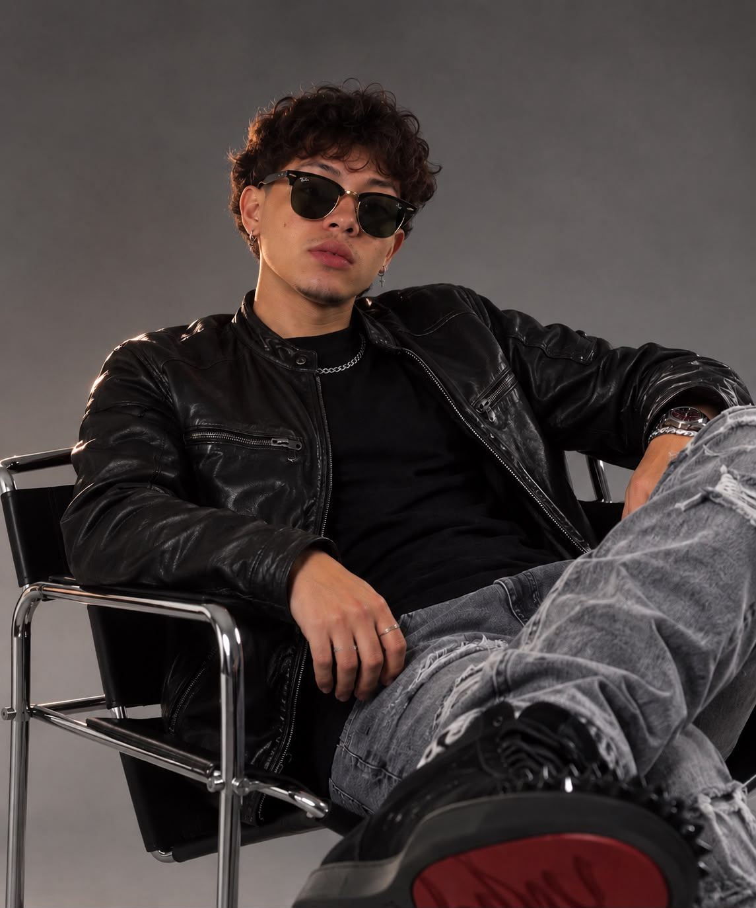

Audiovisual
Imagem em movimento, direção e narrativa para dar textura à presença da sua marca.
MAISON CRIATIVA · DESDE 2024
Não criamos apenas conteúdo.
Construímos percepção.
ESTRATÉGIA / ESTÉTICA / PRESENÇA
01 — A ÉCLYR
cada detalhe conta.
ÉCLYR é uma maison criativa de comunicação e posicionamento. Unimos leitura estratégica, linguagem visual e narrativa para transformar negócios em marcas desejáveis, profissionais e impossíveis de ignorar.
Descubra nosso modo de pensar ↘02 — Frentes
Diferentes disciplinas. Uma mesma intenção: fazer sua marca ser percebida com a força que ela merece.
Imagem em movimento, direção e narrativa para dar textura à presença da sua marca.
Conteúdo, calendário e linguagem que tornam cada ponto de contato reconhecível.
Diagnóstico profundo para encontrar o que sua marca precisa dizer — e como dizer.
Identidades e territórios de marca pensados para permanecer, não só aparecer.
03 — Método ÉCLYR
Todo trabalho começa entendendo o que existe por trás do que se vê.
Ouvimos o negócio, o contexto e as ambições.
Definimos o território que a marca deve ocupar.
Transformamos estratégia em linguagem, imagem e presença.
Acompanhamos o que a marca passa a provocar no mundo.
04 — Seleção
05 — Por trás da ÉCLYR

ANTÔNIOTECNOLOGIA + CRIATIVIDADE
Tenho 18 anos e construo minha trajetória entre tecnologia, desenvolvimento e audiovisual. Foi nessa interseção que encontrei meu lugar: traduzir ideias em experiências onde estratégia e estética trabalham juntas.
Na ÉCLYR, essa curiosidade vira direção — para marcas que não querem apenas ser vistas, mas percebidas.
O PRÓXIMO CAPÍTULO COMEÇA AQUI